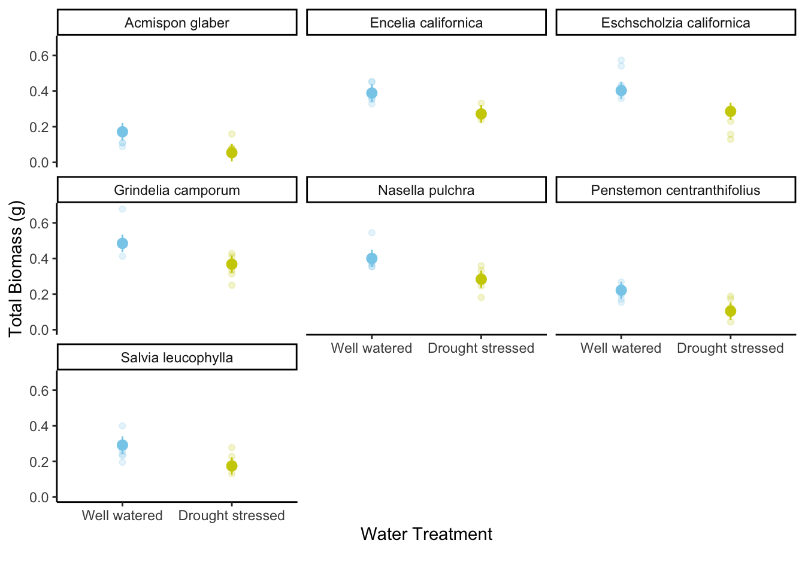

#load in necessary general packages
library(tidyverse)
library(readxl)
library(here)
library(janitor)
#package for visualizing pairs
library(GGally)
#package for model selection
library(MuMIn)
#package for model predictions
library(ggeffects)
#package for model tables
library(gtsummary)
library(flextable)
library(modelsummary)
#load in drought data
drought_exp <- read_xlsx(path = here("data",
"Valliere_etal_EcoApps_Data.xlsx"),
sheet = "First Harvest")
#look at data to check it is correct
#str(drought_exp)
#class(drought_exp)Lund-Paige_homework-03
Link to forked repository: https://github.com/pllund/Lund-Paige_homework-03
Note: document should be committed and pushed ten times
QUESTIONS: Is the way my table is with the title okay.. cannot get it to be on top!
For visualization, why is it not coming up the same way as in the homework.. am i putting in the wrong things?
should model results come from output of summary function?
Problem 1: Multiple Linear Regression
Setting Up
#clean the drought_exp data
drought_exp_clean <- drought_exp %>%
#set nicer column names
clean_names() %>%
#add column with species scientific names
mutate(species_name = case_when(
species == "ENCCAL" ~ "Encelia californica", # bush sunflower
species == "ESCCAL" ~ "Eschscholzia californica", # California poppy
species == "PENCEN" ~ "Penstemon centranthifolius", # Scarlet bugler
species == "GRICAM" ~ "Grindelia camporum", # great valley gumweed
species == "SALLEU" ~ "Salvia leucophylla", # Purple sage
species == "STIPUL" ~ "Nasella pulchra", # Purple needlegrass
species == "LOTSCO" ~ "Acmispon glaber" # deerweed
)) %>%
#moving species_name column after species
relocate(species_name, .after = species) %>%
#adding column with full treatment names
mutate(water_treatment = case_when(
water == "WW" ~ "Well watered",
water == "DS" ~ "Drought stressed"
)) %>%
#moving water_treatment column after water
relocate(water_treatment, .after = water) #running all models in order to prep for model.sel
#null model
model0 <- lm(total_g ~ 1, # formula
data = drought_exp_clean) # data frame
#saturated model
model1 <- lm(total_g ~ sla + water_treatment + species_name,
data = drought_exp_clean)
#simpler model
model2 <- lm(total_g ~ sla + water_treatment,
data = drought_exp_clean)
#simpler model
model3 <- lm(total_g ~ sla + species_name,
data = drought_exp_clean)
#my model I created
model4 <- lm(total_g ~ water_treatment + species_name,
data = drought_exp_clean)a. Table of Models
#read in relevant package
library(MuMIn)
library(knitr)
library(kableExtra)
#create model selection table to see all of the models compared to one another and identify model4 as the best option
model.sel(model0, model1, model2, model3, model4)Model selection table
(Int) sla spc_nam wtr_trt df logLik AICc delta weight
model4 0.05455 + + 9 88.598 -156.2 0.00 0.772
model1 0.07994 -0.0002475 + + 10 88.741 -153.8 2.44 0.228
model3 -0.03315 0.0012900 + 9 72.538 -124.1 32.12 0.000
model2 0.04670 0.0012810 + 4 52.220 -95.8 60.37 0.000
model0 0.27900 2 39.580 -75.0 81.22 0.000
Models ranked by AICc(x) #visually confirm that model4 is the best by checking that it conforms to the assumptions of a linear model
par(mfrow = c(2, 2))
plot(model4)#table of data calling all models from above
select_models <- model.sel(model0, model1, model2, model3, model4)
#convert to data frame
select_models_df <- as.data.frame(select_models)
#add and update the 'sla' column with specific values
select_models_df$sla <- c(NA, -0.0002475, 0.0012900, 0.0012807, NA)
# Assuming you want to keep the last set of values for 'sla', update it again
select_models_df$sla <- c(NA, "+", "+", "+", NA)
#select specific columns
select_columns <- select_models_df[, c("sla", "species_name", "water_treatment", "AICc", "delta")]
#rename columns
colnames(select_columns) <- c("SLA", "Species Name", "Water Treatment", "AIC", "Delta AIC")
#create and print the table with caption
#note that I went to drop-in hours and asked An and she did not know why the title still was on the bottom of the table when I rendered the document and she said that it was fine to leave it like this.
kable(select_columns,
caption = "Table 1. Multiple Linear Regression Model Selection") |>
kable_styling(full_width = FALSE, position = "center") |>
add_header_above(c(" " = 2, " " = 4)) | SLA | Species Name | Water Treatment | AIC | Delta AIC | |
|---|---|---|---|---|---|
| model4 | NA | + | + | -156.19595 | 0.000000 |
| model1 | + | + | + | -153.75361 | 2.442338 |
| model3 | + | + | NA | -124.07569 | 32.120263 |
| model2 | + | NA | + | -95.82521 | 60.370744 |
| model0 | NA | NA | NA | -74.98036 | 81.215598 |
Table shows models constructed for the multiple linear regression analysis. Rows denote the given model (model 0 aka null through model 4) and columns represent predictors used, AIC, and Delta AIC values. For the predictor columns, NA denotes cases where the predictor was not present for the given model, and a + symbol denotes cases where the predictor was present for the given model (i.e. for model4 the predictors were Species Name and Water Treatment. The table supports our conclusion that model4 is the best model.
b. Statistical Methods
To examine the influence of SLA (specific leaf area), water treatment, and species name on total biomass. To determine the model that best described the relationship between our predictors of interest and total biomass in grams, I ran five seperate models and compared AIC and Beta AIC values. First, I ran model0 which was the null model, then I ran the saturated model (model1) with all three predictors, then I ran three more models with different unique combinations of two of the three predictors. From these results, I compared the findings using model.sel and found that model4 was the best given that it had the lowest AIC value and had a delta AIC value of zero. Lastly, in order to visually confirm these findings I used the “par” and “plot” functions to check for linear model assumptions. From our residuals v. fitted plot we saw that the residuals were homoskedastic and the line was roughly straight, for the normal Q-Q plot we saw that the line was roughly a linear straight slope showing that it is normally distributed, for the scale-location plot we saw again that the line was roughly straight and the points evenly distributed meaning that our residuals were normally distributed, and lastly, our constant leverage plot did not appear to present any significant outliers, all of which to say that model4 does conform to all assumptions of a linear model.
In this scenario, we’re interested in how three variables affect total biomass: species (categorical), water treatment (categorical), specific leaf area (SLA, numeric)
c. Model Visualization
#prepping the data
model_visual_prep <- ggpredict(model4,
terms = c("water_treatment",
"species_name"))
# creating new data frame of model predictions for plotting
model4_plotting <- model_visual_prep %>%
# renaming columns to make this easier to use
rename(water_treatment = x,
species_name = group)
# use View(model_preds_for_plotting)
# to compare this to the original model_preds data frame
ggplot() +
# underlying data
geom_point(data = drought_exp_clean,
aes(x = species_name,
y = total_g,
color = water_treatment)) +
# model prediction 95% CI ribbon
geom_ribbon(data = model4_plotting,
aes(x = species_name,
y = predicted,
ymin = conf.low,
ymax = conf.high,
fill = water_treatment),
alpha = 0.2) +
# model prediction lines
geom_line(data = model4_plotting,
aes(x = species_name,
y = predicted,
color = water_treatment)) +
# cleaner theme
theme_classic() +
# creating different panels for species
facet_wrap(~species_name)
model_preds <- ggpredict(model4,
terms = c("species_name",
"water_treatment"))
# plot function within ggeffects
plot(model_preds, # model predictions
limit_range = TRUE, # limit the range of predictions to the range of predictor values
show_data = TRUE) + # show the underlying data
# everything below this is ggplot() stuff
theme_classic() + # classic theme
labs(title = "Preliminary model visualization") + # plot title
theme(panel.grid = element_blank(),
axis.text = element_text(size = 4))# plot function within ggeffects
plot(model_preds, # model predictions
limit_range = TRUE, # limit the range of predictions to the range of predictor values
show_data = TRUE) + # show the underlying data
# everything below this is ggplot() stuff
theme_classic() + # classic theme
labs(title = "Preliminary model visualization") + # plot title
theme(panel.grid = element_blank(),
axis.text = element_text(size = 4)) 
# trying it again!]
model4_preds <- ggpredict(model4,
terms = c("water_treatment",
"species_name"))
# creating new data frame of model predictions for plotting
model4_preds_for_plotting <- model4_preds %>%
rename(water_treatment = x, # renaming columns to make this easier to use
species_name = group)
# use View(model_preds_for_plotting)
# to compare this to the original model_preds data frame
ggplot() +
# underlying data
geom_point(data = drought_exp_clean,
aes(x = water_treatment,
y = total_g,
color = water_treatment)) +
# model prediction 95% CI ribbon
geom_ribbon(data = model4_preds_for_plotting,
aes(x = water_treatment,
y = predicted,
ymin = conf.low,
ymax = conf.high,
fill = water_treatment),
alpha = 0.2) +
# model prediction lines
geom_line(data = model4_preds_for_plotting,
aes(x = water_treatment,
y = predicted,
color = water_treatment)) +
# cleaner theme
theme_classic() +
theme(axis.text = element_text(size = 7)) +
# creating different panels for species
facet_wrap(~species_name) d. Visualization Caption
e. Results
The predictors that best described total mass were species name and water treatment (aka model4) according to the outputs from our model.sel analysis (INSERT MODEL4 SUMMARY STATS HERE). On average, we see that there is a difference between water treatments, specifically that well watered leaves have greater total mass in grams than those which are drought stressed. On average, we see that there are difference among different species and their total mass, seeing that Grindelia camporum had the highest total mass in grams as opposed to Acmispon glaber which had the lowest total mass across both water treatments.
Problem 2: Affective Visualization
a. Describe Visualization
Describe in words what an affective visualization could look like for your personal data (3-5 sentences).
I was really inspired by the data visualization paintings done by Jill Pelto, and I wanted to expand upon this method of affective visualization through my data collected regarding time it has taken me to cook different meals compared to the number of total ingredients used. In order to incorporate the affective aspect of the three vertices discussed in lecture, I would like to create a figure that connects the points of my scatterplot through overlaid sketches related to cooking in order to tie in the message of my plot with the actual data that I have collected. In this way, my data could be conveyed in a way that not only shows the raw outcomes, but additionally expresses a sense of creativity and cohesion for the data.
b. Sketch of Idea
#load in necessary packages
library(png)
library(grid)
#read in photo
sketch_pic <- readPNG("homework3_sketch.png")
grid.raster(sketch_pic)c. Visualization Draft
#load in data that I have collected before I export this image to draw on top of it
cooking_data <- read_csv("homework3_cookingdata.csv",
#silence message
show_col_types = FALSE) |>
#clean column names
clean_names()
#create preliminary ggplot to add to
ggplot(data = cooking_data,
#set x and y data
aes(x = total_time, y = num_ingredients)) +
#set geom to produce points and make points larger and lighter color
geom_point(size = 5, color = "grey36") +
#set new axis labels
labs(x = "Total Cook Time (min)", y = "Number of Ingredients Used") +
#set more blank theme
theme_minimal()#read in final picture of completed visualization
#load in necessary packages
library(png)
library(grid)
#read in photo
final_drawing_data <- readPNG("final_homework3_pic.png")
grid.raster(final_drawing_data)
d. Artist Statement
The context of the piece I created is the data I collected over the course of this quarter recording the time it took me to cook a meal and the number of ingredients I used for that particular meal. I was heavily influenced by the work of Jill Pelto and her creations that merge art with data visualization, specifically the way in which her artwork resembled the topic of the data that she was representing. I chose to do something similar, creating a piece that shows the underlying data while incorporating drawings related to cooking to make the piece fully cohesive. The form of my work is a combination of the output of written code and drawings that I created myself using GoodNotes. I created my piece by first running a simple ggplot to display the data, then importing that figure into GoodNotes and hand drawing on all of the designs onto the figure, then finally importing the completed piece back into R.
Problem 3: Statistical Critique
a. Revisit and Summarize
What are the statistical tests the authors are using to address their main research question? Insert the figure or table you described in Homework 2 here.
The author used a logistic regression statistical test to answer their main research question which was identifying whether there was a relationship between tobacco outlet density near schools and individual’s smoking habits. Additionally, they used a linear regression model to test the relationship between density, perceived prevalence and peer approval.
#load in necessary packages
library(png)
library(grid)
#read in photo
table_pic <- readPNG("table.png")
grid.raster(table_pic)
b. Visual Clarity
How clearly did the authors visually represent their statistics in figures? For example, are the x- and y-axes in a logical position? Do they show summary statistics (means and SE, for example) and/or model predictions, and if so, do they show the underlying data?
The authors did not include any figures to represent their statistics, they chose to only include tables. This in itself made it more difficult to understand their main findings as there were multiple tables and it was a challenging process to interpret them given their complexity. As for the table I included above (Table 5), since there are no x and y axes, the column and row titles were assessed and their positions appear to be logically placed, despite the double layer of column names which makes things slightly more confusing. They do not show all summary statistics because the table is meant to show results from the three regression models, although the table itself is comprised of coefficients and confidence intervals. They do not show any additional underlying data.
c. Aesthetic Clarity
How well did the authors handle “visual clutter”? How would you describe the the data:ink ratio?
Although the table itself is very dense (it is like a wall of numbers) there is not necessarily any visual clutter given that there is no unnecessary data included nor are there any unnecessary labels. The data:ink ratio can be described as high given that there is no non-data ink anywhere in the table. The only ink used is black and none of it is used for any background graphics, just solely for the purpose of displaying the necessary information which allows the reader to just focus on the information and no other elements.
d. Recommendations
What recommendations would you make to make the figure better? What would you take out, add, or change? Provide explanations/justifications for each of your recommendations. Alternatively, if they did not represent their statistics in a figure, what kind of figure would you recommend to them? Describe the x- and y-axes, with any geometries and aesthetics (colors, etc.). Provide enough explanation such that someone would be able to create the figure you describe in code. Provide explanations/justifications for the figure you would recommend.
Given that the authors chose to represent their statistics in a table, I would recommend a forest plot to display their results. For this figure, the x-axis would be labeled “Estimates” and would denote the coefficient values from the table. The y-axis would be labeled “Predictors” and would list all of the specific predictors (i.e. age, gender (male), race, etc…). For the forest plot, the dot for each predictor would represent their coefficient and the bar attached to each individual dot would represent the corresponding confidence interval. In order to define which predictors from from which category (i.e. teen characteristics, peer/parent/household, and home neighborhood) the clusters of predictors would be colored differently. So, all of the predictors under the teen characteristics predictor category would be blue, and the next group would be red, and so on. Lastly, there would be a solid black horizontal line at 0 on the x-axis to identify cases in which the confidence interval captures zero for a given predictor. I would choose to use a forest plot because it does not require a standardized numerical y-axis which would be very difficult to do for this type of data.